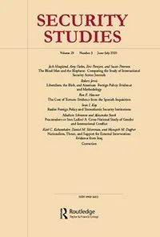
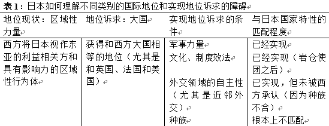

收录于合集 #理论研究 96个

作品简介
【作者】 Steven Michael Ward，现为康奈尔大学政府系助理教授（assistant professor），朱迪思·雷佩和平与冲突研究所副所长（Judith Reppy Institute for Peace and Conflict Studies）。2012年在乔治城大学政府系取得博士学位。主要研究领域为国际安全。
【编译】 陈勇（北京大学国际关系学院）
【校对】 王川
【审核】 吴皓玥
【排版】 李文博
【美编】 聂涵琳
【来源】 Ward, S. (2013). Race, status, and Japanese revisionism in the early 1930s. Security Studies, 22(4), 607-639.
期刊简介

《安全研究》(Security Studies)收录并出版具有创新性的学术稿件——无论是理论研究、实践经验分享还是两者兼而有之。安全研究包含广泛的议题，涵盖核扩散、核威慑、军民关系、战略文化、种族冲突、流行病与国家安全、民主政治、外交决策以及定性与多方法研究的发展。根据Journal Citation Reports显示，其2019年的影响因子为2.167，在95种国际关系类期刊中排名第21（21/95）。
种族、地位以及
日本在20世纪30年代初期的修正主义
Race, Status, and ****Japanese Revisionism in the Early 1930s
Steven Michael Ward
内容提要
文章试图对修正主义国家的行为提出一种新的解释。作者认为，虽然崛起国有足够的时间和耐心，并且有意愿采取行动消除其他大国的疑虑，但有时候也会采取挑战现状的策略。原因不在于相对实力的变化，而是地位的不可流动性（status immobility）（崛起国提升地位和声望的诉求在现有情况下无法得到满足的观念）造成的国内政治影响。1931年后，日本的修正主义倾向愈演愈烈，其部分原因在于日本对地位不可流动性的普遍认知，而这与日本对种族在维持西方主导的地位等级体系作用的理解有关。
文章导读
01
**修正主义
**
最大化（maximal）或体系性（systemic）的修正主义是一种从根本上拒绝或挑战国际现状的宏观战略取向。 带有这一倾向的国家往往会冲击现存体系中霸权的领导权，以及支撑体系等级和规范结构的构成性规范、原则和具体规则。与局部或有限的修正主义不同，体系性的修正主义者往往难以在部分领域或整体上同时采取调和性或适应性的战略，更不愿意释放约束自身行为或履行维持现状承诺的信号。具体而言，识别体系性修正主义转向的明确指标包括：公开反对接受现状的国内行为体的影响力增强；拒绝与保护现状的国家进行合作的行为取向；退出国际机构。
关于修正主义行为的解释大致包含三个方面：相对实力变化、国内特定利益集团和联盟的影响、以及观念和意识形态因素。然而，这三种路径都不足以解释为何崛起国会采取体系性修正主义策略。首先，从实力因素看，崛起国更愿意等待时机（bide their time）和保持低调，而不是冒险。同时，相对实力的解释也不能说明为何国家不采取与体系性修正主义相比成本更低、风险更小的策略，也无法解释为何国家在即使有限的修正尝试都会遭到反制的情况下，仍然理性地（rationally）预期挑战霸权的行为会取得成功。国内利益集团的路径则无法解释为何有意扩张或挑战现状的利益集团能够在某些国家主导政策制定过程。集体观念和意识形态路径则或强调崛起国观念的推动作用，或重视行为体与霸权国的观念差异的影响。但前者在解释战略思想的来源，以及思想观念向具体政策偏好转变的过程等方面都存在不足，同时，由于思想观念具有主观性，主体的信念难以观察，因此也难以对相关论点进行实证检验。
02
**论点：地位的不可流动性和体系性修正主义
**
作者的观点基于如下假定：外交政策是多重国内因素的产物，国内因素影响国家对结构性刺激做出有效应对的能力。由此，对国际地位的关切通过两种途径在对外政策争论中发挥作用，一方面可以改变个体的偏好，另一方面则能够改变话语环境，使之更有利于修正主义的倡导者。
03
**地位不一致，地位不可流动，以及体系性修正主义
**
“地位”指代的是行为体在一个基于共识或共有理解形成的社会等级中的位置。 拥有较高的地位意味着在某些比较维度具有较高的级别。一些国际关系研究提出，国家间同样存在国际地位竞争。地位不一致性（status inconsistency）——个体、群体或国家对其应有或希望得到的地位的认知与他者的认识不相符——是攻击性行为的成因。一些研究指出，国家获得声望的努力和围绕地位的竞争是战争的主要起因。
然而，地位不一致本身并不是崛起国采取根本性的反现状战略的原因。国家能够在不挑战领导权或构成性规范的情况下获得认同和强化自身地位。同时，地位竞争本身也可能强化现状，因为国家参与竞争的过程暗含了对共同理解的地位标志的赞同。但是，“地位竞争不可能成功”的信念，即地位的不可流动性可能会成为崛起国挑战现状的原因。崛起国的精英和大众一旦产生了地位不可流动的认知，就会认为地位归属（是否拥有地位标志和他国的承认）体系不利于本国，参与地位竞争是不可能成功的。
国家在面对长期持续且无法改正的地位不一致性时有两种行为选择，一种是降低地位预期，放弃对高地位的声索，另一种则是转向体系性修正主义，拒绝承认和挑战现状。作者通过社会心理学视角解释地位不一致性如何影响人类个体的行为选择，但也承认国家对地位不可流动性的回应不能简单地用个体行为进行类比。地位不可流动性对国家大战略的影响通过两种途径实现：首先是动员和强化部分行为体拒绝和挑战现状的偏好，其次是以牺牲温和派为代价，制造有利于体系性修正主义倡导者的话语和政治资源。
04
**地位的不可流动性、个体的修正主义偏好和围绕大战略的政治论争
**
地位的不可流动性可能让一些国内行为体（例如领导人和利益集团）反对任何“容纳”（accommodation）或“安抚（reassurance）”的政策，因为这些政策不符合他们对国家在国际体系中应处地位的观念。
地位不可流动观念的扩散也会强化修正主义倡导者的影响力。作者认为，关于地位不可流动的修辞往往能够成为反对“安抚”政策的有力工具。因为相比于复杂的外交和安全战略，公众更容易赞同（be more in tune with）国家间互动中体现出来的地位含义。此外，与聚焦具体政策细节的审慎（deliberative）的成本—收益不同，有关地位稳固性的话语往往辞藻华丽（epideictic），与国家认同（state identity）密切相关，因此能够隔绝一些反对的声音，也更容易激发公众情绪。这些特质意味着，在一个公共话语中充斥着地位不可流动性论述的国家，稳健与调和性的政策很难获得合法性。
05
**日本大正/昭和时期修正主义的兴起
**
1933年3月，日本正式退出国联，标志着日本的外交政策发生重大转折。此前，日本领导人致力于在不激怒西方大国的前提下扩张在中国满洲地区的势力。而在退出国联之后，日本则相继否定了《华盛顿海军条约》和《伦敦海军条约》，退出了第二次伦敦海军会议（the Second London Naval Conference），并且最终与纳粹德国结盟。
对于日本在1931年后从“币原外交（Shidehara diplomacy）”转向体系性修正主义的原因，许多学者从现实主义的视角出发，强调日本对国家安全的担忧。但作者认为这些解释都存在一些漏洞。首先，日本在这一时期有足够的安全理由去和西方达成妥协。日本的工业能力远不及英美，且高度依赖西方提供的资源。其次，许多领导人都清醒地认识到日本与美国和其他西方国家的实力差距，也知道一些行动将导致日本的孤立。退出国联的行为在温和派看来也有巨大的负面效应，也不利于其继续控制政策走向。杰克·斯奈德（Jack Snyder）提出了一个较有说服力的解释，认为日本军队有追求扩张的组织和意识形态动机，日本的政体结构也给军队绑架决策机构提供了条件。此外，扩张主义国家的“战略迷思（strategic myth）”和扩张合法化的言论在日本社会引发的强烈反响也发挥了一定作用。对此，作者提出了两个有待回答的疑惑。首先，日本军队的自主性长期存在，但直到1931年后文官政府才对其失去了控制。其次，为何激进好战和民族主义的言论能够得到公众的热烈回应？
基于上述讨论，作者提出了自己的解释框架，指出 日本的政策转向部分与地位不可流动的观念有关，后者则是源于日本对种族问题在西方主导的地位等级体系（Western-dominated status hierarchy）中重要性的理解。 20世纪20年代和30年代初期的外交失败不断地强化日本关于地位不可流动的观念。许多精英和意见领袖将其解读为基于种族的羞辱，并认为日本对于平等地位的追求不可能在西方主导的、以种族为依据的地位等级体系下实现（日本的地位诉求和对地位标志的理解见表1）。1933年前，地位不可流动的观念广为流传，特别是在李顿调查团报告出台时达到鼎盛，因为在日本看来，这份报告否认了其在势力范围内行使大国干预的权利。在这一背景下，日本国内修正主义者的影响力上升，温和派领导人则很难继续为安抚战略寻求合法性。

06
**大正/昭和时期的日本对种族和国际地位的看法
**
自19世纪中期向西方打开国门，至20世纪30年代，日本的决策者、意见领袖和公众都表现出了对国际地位的深切担忧。明治维新后日本外交的一个主要目标就是加强本国的国际地位，获得西方认同的大国地位，拥有与西方列强一致的权利和特权。20世纪初，日本取得了一系列成就，似乎强化了其被西方接受的大国地位，但地位不可流动的观念也在逐渐增长。在政府间关系层面，日本在一战的所得似乎说明其已经获得了西方认可的平等地位，但鉴于西方社会根深蒂固的种族等级秩序观念和西方领导人回应国内公众诉求的需要，公开的种族歧视，尤其是针对日本移民的歧视仍然存在。移民问题引发的冲突和巴黎和会的经历都强化了日本对西方种族秩序观及其问题的认识，再加上追求平等地位的努力受阻，许多精英和意见领袖都认为日本在一战后仍会遭到西方的不公正对待，这种预期使日本对维持国际现状的承诺极其不稳定。
第一次遭遇西方势力时所受的耻辱在日本引发了两种反应，一是要模仿西方，以求平等地位；二是对西方大国的憎恨，认为日本受到不公待遇的根源是种族差异。中日甲午战争期间，德皇威廉二世开始提出“黄祸论（Yellow Peril）”，认为一个强大的日本代表了来自亚洲的黄种人的威胁。岛津直子（Shimazu Naoko）认为，日本对种族问题的敏感度正是从那时起开始急剧上升。1895年之前，日本国内公众舆论中认为西方将亚洲人视为低劣种族甚至是威胁的论断已经出现，三国干涉还辽（Triple Intervention of 1895）事件强化了这一观念，引发了日本国内强烈的排外情绪。此外，西方对日本移民的限制也成为强化地位不可流动观念的重要因素。19世纪90年代之后，英国自治领（特别是加拿大、澳大利亚和新西兰）和美国的日本移民问题成为日本外交政策中的一个争议性话题。日本领导人实际上乐于与可能的接收国签订一系列非正式协议，限制日本移民入境。但是，一些正式的移民禁令背后的种族含义却引发了日本对其国际地位的担忧。加利福尼亚州1913年通过的《外国人土地法》（California’s 1913 Alien Land Law）激起了日本剧烈的负面反应。1915年，时任日本外相加藤高明（Katō Takaaki）指出这份法案是“针对日本人的歧视，将日本人与其他国家的国民区分开来”。移民问题背后的种族含义使日本领导人对巴黎和会及战后西方主导的世界秩序保持警惕，也促使日本代表致力于在国联宪章中加入种族平等的条款。然而，日本的尝试最终失败，致使地位不可流动的观念进一步增强。
07
**地位的不可流动性和日本在1931年后的外交政策
**
在日本外交转向修正主义的过程中， 地位不可流动的观念通过两种机制发挥作用。首先，对西方的憎恨，特别是种族劣等的观念助推了极右翼民族主义和激进主义意识形态和外交政策偏好的发展。其次，地位不可流动的普遍观念以及与之相关的，日本将会受到西方列强不公正对待的预期都让修正主义倡导者的影响力不断增强。 在国联谴责日本发动“九一八事变”（Mukden Incident）之后，温和派已经很难为自己的政策取向正名。
08
**地位不可流动和日本的修正主义偏好
**
日本走向体系性修正主义的一个原因是极端民族主义者（ultranationalist）和激进主义团体的影响。虽然很难断定种族劣等和地位不可流动的观念在多大程度上影响了极端民族主义者的意识形态、目标和偏好，但相关历史记载说明它们确实发挥了作用。
理查德·斯托里（Richard Storry）指出日本的军事民族主义团体的数量在1919年至1930年期间有所增长。岛津直子则认为种族平等条款受挫是民族主义者走向联合的重要节点。许多在此之后成立的右翼团体都认为世界是由英国领导的盎格鲁- 撒克逊国家所支配的，日本在西方主导的秩序中遭遇不公正的原因是种族差异。例如，右翼团体反对《伦敦海军条约》的两个原因分别是：条约是华盛顿体系（the Washington Conference system）的扩展，掩盖了英美主导世界的本质；裁减海军将阻碍日本发展团结和鼓动亚洲的非白人种族抵抗白人支配地位的能力，美国处理日本移民问题的方式正是代表了西方对待日本的这种态度。
09
**地位不可流动和退出国联的政治
**
地位不可流动的观念影响日本外交政策的第二种方式是塑造了有利于修正主义者的政治和舆论环境。这在日本退出国联的过程中表现得尤为清晰。
“九一八事变”和国联介入之后，日本中央领导层中的温和派仍试图寻找一种能让日本留在国联，并重新建立对军队的控制权的方式。时任首相若槻礼次郎（Wakatsuki Reijirō）认为事件是“令人遗憾（regrettable）”的，并决定“阻止事态进一步扩大”，同时还在10月份拒绝了退出国联的呼吁。外相币原喜重郎则要求得到陆军大臣南次郎（Minami Jirō）的保证，让关东军不再继续前进。即使在若槻内阁于1931年末倒台之后，日本领导人仍试图寻求不被国际社会孤立的方案。1932年3月，时任首相犬养毅（Inukai Tsuyoshi）拒绝承认伪满洲国，希望以此避免世界范围内的广泛谴责。
总而言之，作者认为退出国联的决定并非温和派领导人有意作出，而是一个不可避免的结果。“九一八事变”后，以李顿报告为代表的国联的表态与认为西方不愿意将日本看作完全的大国的话语相联系，对日本公众产生了影响。在李顿调查团到达之前，日本国内已经对国联要求日本从中国东北撤军表示极度反感。李顿调查团否定日本军事行动的态度也引起了强烈的反响，原因在于它与地位不可流动的观念相互照应。当国联接受了李顿报告后，公众的反应也制约了温和派领导人的选择。桑德拉·威尔森（Sandra Wilson）指出，反西方的煽动性宣传造成了一种“抬价效应（outbidding dynamic）”，主要政党互相指责竞争对手未能就“实现独立的外交政策”采取有效行动，以此获取公众支持。
1933年2月，国联以42票赞成，1票反对的形式通过了李顿报告。一个月后，日本正式退出国联。最主要的原因是国联在此次行动中表现的地位政治意义。在日本公众看来，西方不会公正对待日本，也拒绝承认日本拥有与西方大国相同的权利和特权。这种恐惧在国联对“九一八事变”的处理中似乎得到了验证。日本退出国联具有两个重要意义。首先，它表明日本的温和派已在很大程度失去了对修正主义者的控制，“安抚”策略也难以为继。其次，退出国联的行动及其造成的孤立感也强化了日本决策者中修正主义派的优势。
总之，地位不可流动的观念对1931年后日本外交政策产生了广泛影响。一方面，它鼓动了日本的民族主义和极端主义团体的煽动行为，威胁并削弱了温和派领导人对政治军事的控制。另一方面，它使得日本精英和公众对国联就“九一八事变”的回应高度敏感，并且也是日本退出国联的直接原因。
10
**理论和政策启示
**
结论部分，作者阐述了本文的理论和政策意义。首先，文章为分析崛起国对国际体系的现状满意或不满的原因做出了重要贡献。其次，文章就地位关切如何影响外交政策的问题提出了相应的理论，并且更加重视因果机制的梳理。同时，文章也更侧重于分析国内因素。作者认为，如果地位确实重要，那么它对政策的影响将通过国内政治过程表现出来。最后，尽管种族不再是确定地位的重要指标，但如今崛起国仍然在不同类别和领域面临有关地位的难题，地位不可流动的观念仍可能激发公众的不满情绪，致使现存国际体系面临危险。
译者评述
文章试图回答的问题是崛起国为何会采取不计成本的修正主义政策。作者在经济利益、权力和文化背景等行为动机之外提出了自己的观点，利用地位政治的理论分析日本从“币原外交”向“体系性修正主义”转变的原因。
本文发表于2013年，此前，拉森（Deborah Welch Larson）和舍甫琴科（Alexei Shevchenko）在文章也通过地位政治的理论分析中俄对待美国霸权的策略。两位作者借鉴“社会身份理论（SIT）”，认为崛起国追求更高地位和积极的社会身份的过程中可能采取社会流动（social mobility）、社会竞争（social competition）和社会创造（social creativity）等身份管理策略。[1] 本文试图解释的日本的“体系性修正主义”转向可被看作是社会竞争策略的表现。但与拉森和舍甫琴科的文章有所不同，本文未将国家视作单一行为体，在社会身份理论之外更侧重于国内政治的研究，将情感因素和国内政治进程结合，为崛起国的地位诉求如何转化为外交政策取向提出了一套因果机制解释。[2]
值得注意的是，文章也体现出了地位政治对崛起国与国际规范的关系的研究的价值。“地位”指代有关某一国家在特定社会价值体系中的位次的共同信念。[3]如作者所言，崛起国除种族之外仍然面临多重地位挑战。国际社会中不同的规范体系，例如人权、民主等，都能被用作判定一国国际地位的依据。类似的分析也部分体现在其他研究中。比如，在英国学派的文献中，“文明标准”的概念就是指代“用来判断国家是否为国际社会中的合法或者合格成员的国际规范”[4] ——无论是强调主权的旧“文明标准”，还是突出人权的“新文明标准”，都是国家能否成为国际社会合格成员的依据。例如，本文认为“种族”曾是判断国家是否具有“大国”地位的标志，而它也是旧“文明标准”之一。从这个角度来看，对地位政治和等级制的研究地位能够与其他崛起国和国际规范关系的研究相结合。例如，铃木省吾（Suzuki Shogo）在文章中指出，中国和日本在冷战后都通过参与维和行动等方式表明自己符合国际规范，以此获得他国的认同，进而成为“合法的大国（legitimate great powers）”。[5]
当然，本文仍存在一些有待解决的问题。首先，囿于语言限制，文章的资料来源大部分是二手文献，一手的档案材料可能较为缺乏。其次，当地位作为自变量时，地位诉求对外交政策动机的影响程度，以及与经济利益等其他因素的关系似乎难以断定，对“地位”的追求和对“权力”的追求在某种程度上存在重合之处。日本在19世纪后期就已开始的一系列扩张举措，这一点是否可以用“权力追求”而非地位予以解释？如果作者能引入19世纪的权力扩张与20世纪30年代后的修正主义外交政策做一个比较，或许可以回答这一问题。本文中，为尽可能规避质疑，作者主要限制了研究对象的范围，将主要关注点放在“九一八事变”和李顿报告出台后日本的外交转向，而不是30年代初日本整体外交政策的形成和变化原因，降低了识别不同因素作用的难度。但正如作者所言，历史材料只能显示地位观念在30年代初日本公众舆论激进化的过程中扮演了重要角色，但无法判断作用的程度如何。如何更好地识别地位追求与其他行为动机的关系或许也是有关地位政治的研究需要重点考虑的问题。
参考文献
[1]Larson, Deborah Welch, and Alexei Shevchenko. “Status seekers: Chinese and Russian responses to US primacy.” International Security 34.4 (2010): 63-95.
[2]在2017年出版的专著中，作者对地位诉求通过国内政治转化为外交政策取向的过程进行了更加详细的描绘，见Ward, Steven. Status and the challenge of rising powers. Cambridge University Press, 2017.p.34, Figure 2.1
[3]Paul, Thazha V., Deborah Welch Larson, and William C. Wohlforth, eds. Status in world politics. Cambridge University Press, 2014，p.7
[4]张小明: 《从“文明标准”到“新文明标准”: 中国与国际规范变迁》，北京：九州出版社2018 年版。
[5]Suzuki, Shogo. “Seeking legitimate great power status in post-Cold War international Society: China’s and Japan’s participation in UNPKO.” International Relations 22.1 (2008): 45-63.
文章观点不代表本平台观点，本平台评译分享的文章均出于专业学习之用, 不以任何盈利为目的，内容主要呈现对原文的介绍，原文内容请通过各高校购买的数据库自行下载
**
**
**
**
**
**
添加 “国小政”微信
获取最新资讯


国政学人
支持学术公益与知识传播
微信扫一扫赞赏作者 __赞赏
已喜欢，对作者说句悄悄话
取消 __
发送给作者
发送
最多40字，当前共字
上一页 1/3 下一页
长按二维码向我转账
支持学术公益与知识传播
受苹果公司新规定影响，微信 iOS 版的赞赏功能被关闭，可通过二维码转账支持公众号。